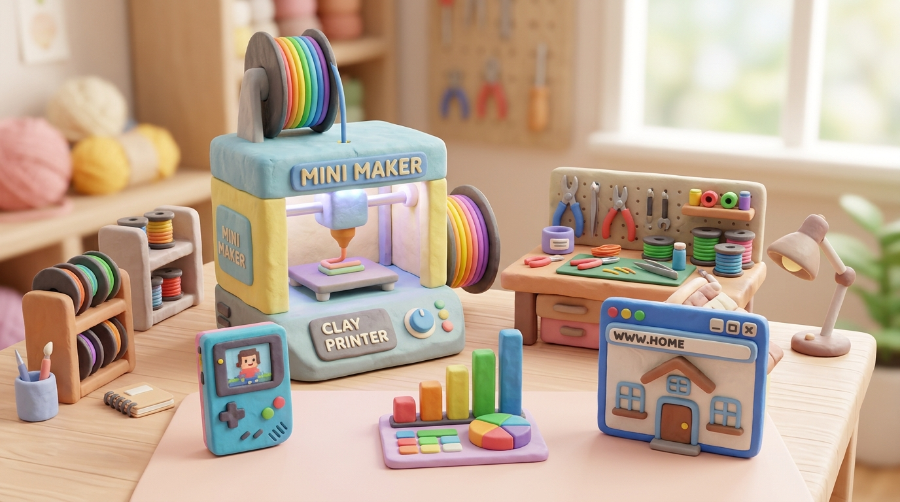

SLIDE 01 · 개념 이해
말로 만드는 세상,
말로 만드는 세상,
바이브 코딩(Vibe Coding)
코딩을 몰라도 머릿속 상상을 현실로 만드는 시대
💡 바이브 코딩이란?
어려운 프로그래밍 영어 문법 대신, 평소 쓰는 말(자연어)과 느낌(Vibe)으로 AI에게 주문하여 프로그램을 완성하는 혁신적인 방식입니다.
🍳 일상 비유: '식당 주방과 손님'
기존 코딩
내가 직접 주방에서 칼질하고 불 조절하며 땀 흘리는 요리
➔
바이브 코딩
식탁에 편하게 앉아 요리사(AI)에게 "얼큰한 찌개 끓여줘" 주문하는 요리!
🎨 식당 요리사(AI)에게 주문서만 건네면 끝!
SLIDE 02 · 탄생과 발전
언제 시작되었고,
언제 시작되었고,
어떻게 진화했을까?
2025년 2월 안드레이 카파시의 선언 & 비서의 놀라운 성장
"요즘 나는 코드를 직접 쓰지 않는다. 그저 대화하고 느낌(Vibe)대로 만들 뿐이다."
— 안드레이 카파시 (전 테슬라 AI 책임자)🚗 비서의 4단계 성장기 (수동 운전 ➔ 완전 자율주행)
- 1단계 (단어 자동완성): 스마트폰 키보드처럼 다음 단어 몇 개만 추천
- 2단계 (챗봇 문답): 챗GPT에 물어보고 코드를 복사해서 붙여넣기
- 3단계 (전용 조수): 컴퓨터 화면 안으로 들어와 서류를 함께 고쳐주기
- 4단계 (총괄 실장): "이 앱 만들어놔" 하면 설계부터 완성까지 스스로 끝냄
🚗 기어 변속(수동 운전)에서 완전 자율주행으로!
SLIDE 03 · 실전 가이드
어떻게 하고,
어떻게 하고,
어떤 도구를 쓸까?
딱 3단계로 완성하는 실천법 & 나에게 맞는 맞춤 도구
🛠️ 초간단 3단계 실천법
1
도구 켜기
AI 작업실 열기
➔
2
말로 주문하기
"메모 앱 만들어줘"
➔
3
눈으로 보고 피드백
"글자 좀 키워줘"
🧰 나에게 맞는 도구 선택
밀키트형 (웹 도구)
Bolt.new / v0
설치 없이 브라우저에서 1분 만에 뚝딱!
전문 주방형 (설치 도구)
Cursor / Antigravity
내 컴퓨터에서 완성도 높은 프로젝트 개발
🧩 블록 장난감 맞추듯 쉬운 3단계 완성
SLIDE 04 · 활용 사례
바이브 코딩으로
바이브 코딩으로
무엇을 만들 수 있을까?
머릿속 아이디어를 즉시 출력하는 디지털 3D 프린터
🐕
맞춤 생활 도구
강아지 산책/식사 기록장, 나만의 가계부, 맞춤 타이머
⚡
반복 업무 자동화
뒤죽박죽 엑셀 한 번에 정리, 파일 수백 개 이름 날짜순 변경
🎮
재미있는 미니 게임
우리 가족 사진 짝 맞추기, 테트리스, 상식 퀴즈 게임
🌐
나만의 웹사이트
내 이력서 포트폴리오, 부모님 가게 소개, 모바일 모임 초대장

🖨️ 상상하는 무엇이든 뚝딱 찍어내는 만능 공방
SLIDE 05 · 핵심 요약
초보자를 위한
초보자를 위한
3대 성공 꿀팁
이 3가지만 기억하면 누구나 실패 없이 성공합니다!
TIP 1
코드를 억지로 읽지 마세요
영어가 쏟아져도 신경 쓰지 말고, 화면이 잘 움직이는지만 확인하세요.
TIP 2
에러가 나면 그대로 복사해 던지세요
빨간 에러 창이 뜨면 "이거 고쳐줘"라고 AI에게 전달하면 끝납니다.
TIP 3
작고 사소한 것부터 시작하세요
처음엔 거대한 서비스보다 간단한 계산기, 스톱워치부터 만들어보세요.
🌟 "코딩 실력보다 중요한 것은 '내 머릿속 아이디어'입니다."
오늘 바로 AI에게 당신의 첫 번째 주문서를 건네보세요!
🔑 당신의 아이디어가 세상을 바꿉니다!